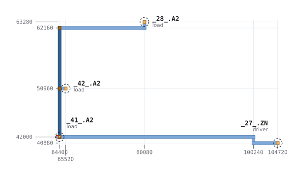
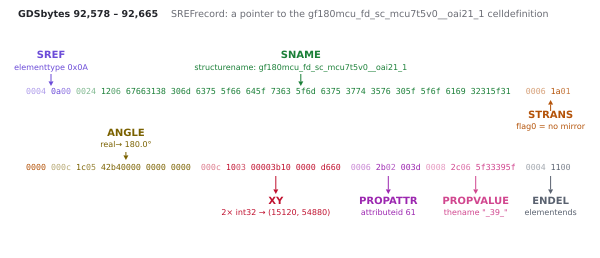
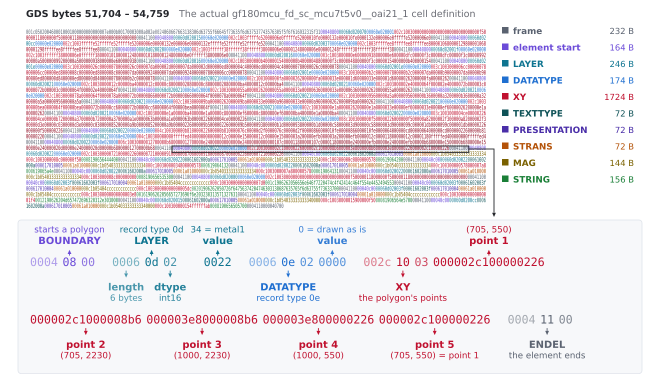
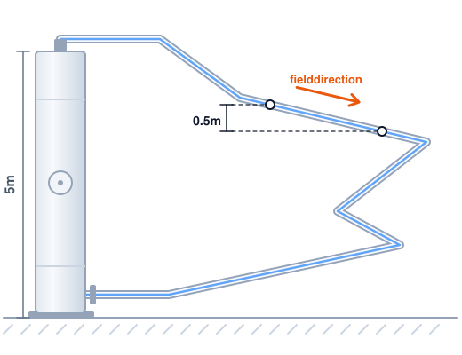
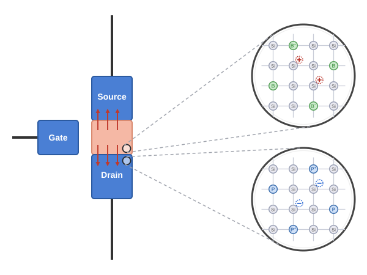
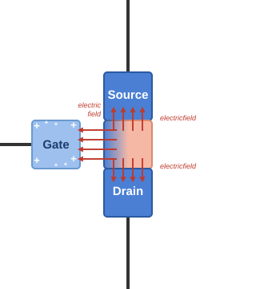
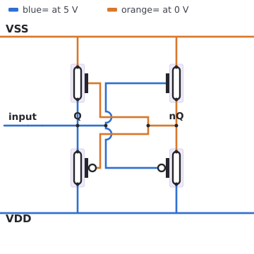
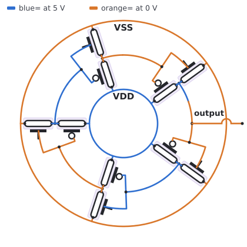

Định dạng bài này: đây không phải bản dịch nguyên văn từng đoạn. Toàn bộ văn bản tiếng Anh của bài gốc được giữ nguyên, mỗi câu tách thành các cụm có nghĩa; rê chuột (hoặc chạm trên điện thoại) vào một cụm để xem nghĩa tiếng Việt của cụm đó. Chạm lần nữa hoặc chạm ra ngoài để đóng; với cụm chứa liên kết, trên điện thoại chạm lần đầu để xem nghĩa, chạm lần hai để mở liên kết. Thuật ngữ như RISC-V, ASIC, PDK, tapeout… giữ tiếng Anh kèm giải nghĩa ngắn. Bản dịch từng cụm do người viết làm theo ngữ cảnh, có thể còn chỗ chưa tối ưu. Văn bản và hình do Vitalik tự làm được tác giả phát hành tự do theo giấy phép WTFPL (theo README kho vbuterin/blog), nên được đăng lại đầy đủ ở đây với ghi công. Các hình không phải của tác giả (ảnh chụp bài đăng X, ảnh của bunnie) không được sao chép; mình để liên kết tới nguồn. 13 sơ đồ còn lại là các hình SVG nhúng trong bài gốc. Mindmap cuối bài do người viết tóm tắt, không phải của tác giả.
TL;DR
- Vitalik dẫn người đọc quen “thuần phần mềm” đi xuống tận tầng phần cứng: viết một mạch nhân 3 (8 bit) bằng Verilog, rồi theo công cụ mã nguồn mở (Yosys, OpenROAD) đi qua netlist → DEF → GDS, với PDK của từng nhà máy (fab). Càng xuống thấp, phần mềm càng phải biết nhiều về quy trình của fab.
- Phần vật lý: pha tạp silicon bằng boron/phosphorus, transistor (cực cổng, nguồn, máng), inverter (NOT), NAND, bộ nhớ làm từ hai inverter, đồng hồ từ một số lẻ inverter nối vòng. Khác với mạch số học trong ZK/FHE, mạch vật lý có chiều thời gian và có thể lặp vòng.
- Về “mã nguồn mở” trong phần cứng: các fab đang công khai PDK (GF180, SKY130, IHP 130 nm, và ICS55 mới một phần); mức khả thi thực tế được xem là khoảng 25 nm. Để kiểm chứng chip cần mở tới tầng GDS, không chỉ Verilog; các kỹ thuật kiểm tra như IRIS cần đi kèm thiết kế dễ kiểm tra. Kết luận: “not your silicon, not your keys”, và hy vọng ngành tách thành phần cứng hiệu năng và phần cứng bảo mật.
A shallow dive into open-source chip design
Special thanks to Matt Venn for feedback and review
If you want to fully understand, optimize or verify what's going on in any kind of computer, ultimately you have to go down to the level of the hardware: transistors, silicon and electrons. Compilers, interpreters and operating systems do the job of taking an application expressed in a high-level programming language, and converting it into base-layer machine code that tells the machine what to do. The computer chip itself executes that machine code, and runs it on the base-layer language of the universe: chemistry and physics.
The goal of this post will be to give an introduction to this stack, targeting a reader who is used to a more "pure-software" view of the computing world. Specifically, I will:
- Explain the software stack of the languages used to design chips
- Explain the basic chemistry that makes transistors, gates and circuits work
- Assume you already understand how complex programs can be turned into circuits through logic gates (I cover this implicitly across all the various cryptography posts) - I'll declare victory at a single NAND gate and assume you know how to go further
- Focus on differences between the typical mathematical models of arithmetic and boolean circuits, and physical silicon circuits
- Talk about what "open-source" practically means in a hardware context - where the frontier is, and where it can improve
The hardware language stack

Much like there are high-level languages for writing software, there are high-level languages for writing hardware. People (or bots) write code in the highest-level languages, and this code then gets compiled into progressively lower-level languages, where the lower you go the more specific you get. In software, the lowest levels are computer-dependent: you compile for a particular architecture. In hardware, the lowest levels (and to some degree even mid-levels) are fab and process-dependent: you give instructions designed for a particular facility running a particular fabrication process to build the chip with.
Let's walk through an example. We're going to have a circuit which simply holds a value x, and every turn it multiplies x ← x * 3, throwing away any high-order bits (keeping only 8 bits). It's a simple toy, but it's enough to show many of the important features of chip design: circuits, the hardware description language equivalent of arrays, timing and memory.
Here's the Verilog for it:
`default_nettype none
module tt_um_mul3_seq (
input wire [7:0] ui_in, // Dedicated inputs (unused)
output wire [7:0] uo_out, // Dedicated outputs: current state
input wire [7:0] uio_in, // IOs: Input path (unused)
output wire [7:0] uio_out, // IOs: Output path
output wire [7:0] uio_oe, // IOs: Enable path (active high: 0=input, 1=output)
input wire ena, // always 1 when the design is powered
input wire clk, // clock
input wire rst_n // reset_n - low to reset
);
reg [7:0] state;
always @(posedge clk) begin
if (!rst_n)
state <= 8'd1; // starting point: 1, as an 8-bit number
else
state <= state + (state << 1); // multiply by 3
end
assign uo_out = state; // registered output: changes only on clock edges
assign uio_out = 0;
assign uio_oe = 0;
// List all unused inputs to prevent warnings.
wire _unused = &{ena, ui_in, uio_in, 1'b0};
endmoduleThe beginning declares the structure of the input and output. The values we are computing over are 8-bit integers, and so most of the wires are directly declared as packs of 8. The main "meat" of the code is just lines 16-21: always @(posedge clk) (meaning "the logic below activates when the clk shifts from 0 to 1"), if we're resetting, set the state to 1; otherwise multiply the state by 3. state << 1 shifts each bit leftward by 1; left-shift by 1 and then add is by far the most economical way to multiply by 3.
At the Verilog level, that's it!
If you want to add inputs and outputs (eg. a keyboard or a display), that's outside the chip - though you would need to add extra logic to talk to the input or output correctly. If you want to compute Keccak-256 in a loop instead of multiplying by 3, that's "just" a more complicated set of steps that you can shove into the always @(posedge clk) section. If you understand the above, you already understand everything you need to design a leanSeal ASIC!
Now, let's try to build this into a chip. For this, we'll use Yosys and OpenROAD. Here's the result of the intermediate stage, converting that Verilog into a netlist. I'll show one small fragment of the code:
...
wire _23_;
wire _24_;
gf180mcu_fd_sc_mcu7t5v0__clkinv_1 _25_ (
.I(rst_n),
.ZN(_06_)
);
gf180mcu_fd_sc_mcu7t5v0__clkinv_1 _26_ (
.I(uo_out[3]),
.ZN(_07_)
);
gf180mcu_fd_sc_mcu7t5v0__oai21_1 _27_ (
.A1(uo_out[1]),
.A2(uo_out[4]),
.B(uo_out[3]),
.ZN(_14_)
);
gf180mcu_fd_sc_mcu7t5v0__oai21_1 _28_ (
.A1(_13_),
.A2(_14_),
.B(_12_),
.ZN(_15_)
);
...Notice a few things here:
- The netlist language is simple: it's just components and their connections. Components are declared by their name, eg.
oai21stands for "OR-AND-INVERT":ZN = not((A1 or A2) and B)Connections are made by giving two or more ports the same name, eg. in the above code, you can see.ZN(_14_)in the first OAI, and.A2(_14_)in the second. This means that the output of the first OAI becomes one of the OR'd inputs in the second OAI, and there is a wire from one to the other. And what I showed above was a snippet; across the whole chip, the_14_wire connects to more things, not just those two. In fact, the above netlist is still valid Verilog! Verilog is very flexible in this ability to be low-level or high-level as the developer wishes. - The netlist is already at least a little bit foundry-specific, in practice.
gf180mcu_fd_sc_mcu7t5v0__oai21_1is a type of cell that is described in a standard-cell library that is optimized for a particular foundry. Theoretically, any reasonable netlist can be turned into a design that can be produced by any foundry, but in practice, different manufacturing processes lead to different components having different costs in area, speed and power, and so different netlists are optimal in different processes. The above netlist is being built for the GlobalFoundries fab in Singapore, which is using the GF180 process.
The next step in the compilation is the GDS ("Graphic Design System"). Before we get all the way to the GDS, we first get to DEF, yet another intermediate format that still has many high-level parts, but already gets very specific about geometry.
Here is the portion of the DEF that corresponds to just the wire that's labeled _14_ in the netlist above:
- _14_ ( _42_ A2 ) ( _41_ A2 ) ( _28_ A2 ) ( _27_ ZN ) + USE SIGNAL
+ ROUTED Metal2 ( 50960 64400 ) ( * 65520 )
NEW Metal3 ( 50960 64400 ) ( 62160 * )
NEW Metal2 ( 62160 64400 ) ( * 80080 )
NEW Metal2 ( 62160 80080 ) ( 63280 * )
NEW Metal3 ( 42000 64400 ) ( 50960 * )
NEW Metal2 ( 40880 100240 ) ( 42000 * )
NEW Metal2 ( 40880 100240 ) ( * 104720 )
NEW Metal2 ( 42000 64400 ) ( * 100240 )
NEW Metal1 ( 50960 65520 ) Via1_VV
NEW Metal2 ( 50960 64400 ) Via2_VH
NEW Metal2 ( 62160 64400 ) Via2_VH
NEW Metal1 ( 63280 80080 ) Via1_VV
NEW Metal1 ( 42000 64400 ) Via1_VV
NEW Metal2 ( 42000 64400 ) Via2_VH
NEW Metal1 ( 40880 104720 ) Via1_VV
NEW Metal2 ( 42000 64400 ) RECT ( -280 -660 280 0 ) ;Those are actual coordinates showing an actual trajectory of a wire: starting from (50960, 64400), then to (62160, 64400), then to (62160, 80080), and so on. Here it is drawn out:

Note that:
- The widths of the wires are unspecified in the DEF; that's specified elsewhere as a per-layer default
- Metal1, Metal2 and Metal3 are layers
- There is an implied layer of an insulating material (SiO2) between consecutive metal layers. A "via" is a hole in that layer that is filled with metal
There are some extra files that specify the order of the layers, what materials the layers are supposed to be made out of, etc.
This is already very low-level: we're describing the individual wires and gates at the level of their geometry. But there are further levels down that we can go. Let's look at the actual GDS. This time, we'll focus on the OAI that the netlist labels "_27_". Here are the two parts of the GDS that matter:


The first is an 88-byte record that says "put a thing of this type over here". The second is the actual definition of that thing, right down to listing all the polygons. This is a description of the chip at almost the lowest level you can get: the actual geometry of each individual component. Not just "transistor here", but "layer Metal1 gets a rectangle from (705, 550) to (1000, 2230)". There are some details that are outside the GDS proper (most notably: which material each layer is made out of and which doping levels are used), but the GDS comes remarkably close to being comprehensive.
In order to generate and validate this, we use a package provided by the foundry called the process design kit (PDK), along with higher-level software libraries (provided either by the foundry or by third parties) designed around the PDK. This is process-specific, and it includes all kinds of information about how to design chips for the given fab. For example, the PDK includes the rules for a DRC ("design rule checking") step, which verifies that distances between all the components are sufficient and that any other geometry rules specific to that foundry's process are obeyed.
Basically, as soon as you go lower-level than Verilog, the chip design software has to know at least some things about the process that the fab is using, and the further down you go, the larger (and less optional) that list of things gets.
Finally, once you send the fab your final design, the fab itself makes geometry adjustments. The two big ones are (i) nudging the edges of shapes and adding tiny features at corners so they print as drawn, and (ii) adding dummy fill material. In principle, if you have all the needed information, as a chip designer you could do this yourself (and it's arguably better for chip inspectability if you do). In practice, dummy fill can be added by open-source flows, but the lithography details are not public and so geometry corrections can only be done by the fab even with processes that we consider open-source. That said, these corrections are small enough that they do not interfere with the inspection methods I will describe below.
Manufacturing the chip
The last step is manufacturing the chip. In principle, it's "call up the fab, send them the GDS and they do it and send you the chips through the mail". In practice, it's very very expensive, complicated and time consuming. If you are a small-scale chip designer (read: you don't have millions of dollars), the most economical approach to get started is through multi-project wafer (MPW) companies. These companies collect a large number of chip designs from customers, and pay a fab to do a single production run that makes all the chips. Wafer.space is a good example of such a company.
If you are even smaller than that, and especially if you're getting involved with chips at a hobbyist level, an even easier approach is to go through the Tiny Tapeout program. Tiny Tapeout produces a single chip that has hundreds of different circuits on it, supplied by hundreds of different participants.
Proprietary and open fabs
Probably the most frustrating thing about chip design is how opaque and proprietary the whole thing is. If you work with a "frontier" fab, you will find that the PDK and even the higher-level chip design software are all proprietary, software to work with that fab and that PDK is also proprietary and made by different vendors, and you have to sign all kinds of non-disclosure agreements in order to be able to have any access to the whole stack. On the whole, hardware is a total proprietary dystopia, to an even greater degree than software was 25 years ago at the peak of the Microsoft Word and Internet Explorer days.
If you want to make open-source chips, there are fabs that are friendly to this, but you pay a lot in performance. No (practically useful) fab is fully open-source in the sense that there's a full blueprint of how to build another copy of the entire fab from scratch. But what you can get is fabs that openly publish their PDKs, and for which there are fully open-source chip design stacks, and that don't make you sign any NDAs, so you know and are free to publish the exact (up to physical limits) geometry of the chips you create.
The top three are:
- The Singapore fab running the GF180 process
- The SkyWater fab in Minnesota that runs the SKY130 process
- IHP in Frankfurt an der Oder (also at the 130 level)
Recently, ICsprout's ICS55, produced in a fab in Hangzhou, is opening up, though so far only partially: the PDK release is a preview and does not include some pieces that the other fab PDKs provide, and it's only available for research and prototyping and not commercial mass production.
The numbers 180, 130 and 55 here theoretically refer to nanometers, specifically the minimum gate length of a transistor that the process can produce. The lower the nanometers, the more compute the chip can pack into a particular space, and the more compute it can do per watt. In practice, the numbers approximately correspond to actual nanometers above the ~25nm level, though even there the connection is loose. Below that level (eg. TSMC is at 2nm), the numbers stop meaning much of anything at all and effectively become marketing buzzwords, representing gains that actually come from eg. more efficiently packing chip components in three dimensions.
Above around the 50-100nm level, lower nanometers means more space efficiency and more energy efficiency. Below that level, you get more space efficiency more easily than more energy efficiency. Analog workloads (working directly over continuous values, rather than bits) also get noisy much more quickly below those levels. Furthermore, the minimum cost of a fabrication run increases quickly as the nanometer levels decrease.
An "ideal realistically achievable target" for open processes is often considered to be exactly that 25nm level: not good enough for super-heavy workloads like frontier AI, but excellent for everything else.
How do transistors and gates work?
As we just saw, the ultimate bottom-level language of chip design is materials science and geometry, and the interpreter of this language is the laws of chemistry and physics. It is worth understanding the basics, so you can appreciate some important differences between real physical circuits and the diagrams of XOR, AND, and NOT gates that you might already be used to.
First, the obvious. You probably remember this from middle school:
- Some materials are insulators; other materials are conductors.
- Electricity consists of electrons flowing through conductors.
- Electrons flow from one end of a battery, which we consider as having zero voltage (we'll call it VSS), into the other end, which has some voltage, eg. 5V (we'll call it VDD).
- There are switches of some kind that can open or close different parts of the circuit. That process controls where electricity goes in real time, and thus makes the computation run.
But to understand the key component that makes circuits work, the transistor, we have to go a bit further. Particularly, we need to unpack the concepts of "voltage" and "electric fields".
The easiest metaphor for voltage is height and gravity. Imagine a battery as being a pump that releases water at a height of 5 meters, and accepts water at a height of 0 meters. Between the top and the bottom, there are tubes that water flows down along.

At any point, the direction of the slope is the field, and the height is the voltage. Whenever there is a field, across that field there is a voltage difference.
(Note that in this whole section, I am being sloppy with signs to optimize for intuition: in reality, because electrons have negative charge, they go up voltages, unlike water, which goes down heights)
Now, we get to the twist that makes electricity and gravity different: electrons aren't just acted on by fields (and hence voltage differences); they also create fields (and hence voltage differences). Of course, all gravitational bodies create fields too, but you need something as big as an asteroid to make a gravitational field that you can notice (although...). Electric fields are around 1040 times stronger than gravity depending on the specific particles involved, so we can produce electric fields with just a few electrons, and thus turn them on or off very easily. So to understand how transistors work, you will need to have a dual view: electrons are not just acted on by "slope" - they also create "slope".
Now, let's look at a transistor. There are three terminals: a gate, a source and a drain.

(Again, I'm drawing the direction of fields in terms of the effect they have on electrons, which is opposite the direction the field "technically" has because electrons have negative charge)
The source and drain, and the area in between, are both made out of silicon that is doped - that is, a small portion of the silicon atoms are replaced by something else.
There are two configurations here:
- Replace some silicon with boron. Boron has 3 electrons in its outer shell, but the shell "wants" 8. The crystal structure gives each atom 4 neighbors (in reality it's 3D: so tetrahedral, not square, but still 4 neighbors), which adds another 4 electrons via covalent bonds. Hence there is one free slot left. This creates a "hole", and that hole can freely jump around between boron atoms and silicon atoms.
- Replace some silicon with phosphorus. Phosphorus has 5 electrons in its outer shell, and covalent bonds with neighboring silicon atoms add 4. The shell "wants" 8. Hence, there is one electron too many. These electrons escape and freely bounce around inside the doped silicon.
So far, both of these have zero net charge. When a "hole" leaves its original boron atom and goes onto a silicon atom nearby (ie. an electron leaves from the silicon atom and goes onto the boron atom), the boron atom becomes -1 charge and the silicon atom becomes +1 charge. And similarly, for each phosphorus atom that became +1 charge because its excess outer electron went away, there is a free electron (-1 charge) hanging around nearby.
But if you put the two beside each other, then this changes. Holes "want" to be filled (in the sense that a filled state has lower potential energy). And so once electrons are free to randomly move from one side to the other, in equilibrium, some of them shift from the phosphorus-doped silicon into the boron-doped silicon, giving the former a net positive charge and the latter a net negative charge. This creates a field that repels electrons away from the boron-doped area in the middle, and this field creates a voltage.
Taking the "voltage as height" view, you can think of this as a hill in the middle of the pipe. The local "heights" might look something like this (take this as stylized, not as actual volt numbers, and again I'm flipping signs to make this more intuitive):

Now, let's see what happens if we let the gate empty of electrons (there is a one-time current pulling the electrons out, but generally this effect will be caused by charge, not current). Then, the gate will have a bunch of positively charged ions. Because there is an oxide insulator between the gate and the rest of the structure, current does not flow through, but the electric field created by the positive charge does pass through. That field attracts electrons toward the gate, and creates its own voltage:

Taking the "voltage as height" analogy, you can imagine the gate exerting a force that "tilts" the red area between the source and drain, so that while there still is a hill, the left edge of the hill is lowered to the point where there is now an equal-height path from one side to the other, which electrons can cross.

Of course, remember that in real life, this is all three-dimensional; the gate is on top of the red area, not to the left of it, and so the area where current can now cross is not a one-dimensional strip on the left, but a two-dimensional slice at the top.
What I showed above is one type of transistor. There is also another type: instead of phosphorus on the outside and boron in the middle, it's the reverse. The math works in the same way, with everything flipped, including thinking about "holes" instead of electrons: the field that's there by default repels holes away from the center, and if the gate is filled with extra electrons (rather than drained), that creates a field which attracts holes leftward.
Now, let's put two of these transistors, one of each type, together:

This contraption is called an "inverter". Notice three things:
- No matter what value is coming into the gate, the opposite comes through the output. So functionally, it's a NOT gate.
- To make sense of the structure, we are now thinking not at the level of charge, but at the level of voltage. This is not a different design; it's a change in perspective: if the NMOS's gate gets connected to a 5V voltage, then electrons flow out of the gate terminal toward that voltage, so the gate charge becomes positive, and so we get the conduction effect we saw above. Likewise for the PMOS if the voltage at its gate is 0V.
- It might seem like you could just get rid of the PMOS and the VDD connection, and the NMOS alone could act as an inverter: if there's orange on the left, the transistor is off and it blocks the orange from getting from the top to the output, so the output becomes blue, and if there's blue on the left, the transistor lets current through, and the output becomes orange. But for the electrons to drain out and not stay there forever, you have to connect the output of the NMOS to VDD somehow. Early designs did this through a resistor. Today we include both the NMOS and PMOS, and always turn on either one or the other, because it's more energy-efficient.
The last point is worth dwelling on because it shows us a key difference between electrical circuits and the arithmetic circuits you are used to if you've studied a lot of ZK and/or FHE. Arithmetic circuits follow a timeless causal logic: the output just is the result of computing the gate on the inputs. In a physical circuit, however, we are dealing with actual electrons in the physical world, and the physical world has a dimension of time. In fact, a transistor is symmetric: it does not set the drain to equal the source; it just opens a channel between them, forcing the drain and source to equal each other. And so if you start off with the region after the gate at 5V, then shut off the transistor, that region stays at 5V unless the electrons (or "holes") get explicitly drained off somewhere.
The cleanest and most energy-efficient thing to do is to have the second transistor turn on exactly when the first transistor turns off, and vice versa. At any point, the output is either actively getting electrons from VSS, or getting drained into VDD.
Now, here's a NAND gate:

Notice that here there's an asymmetry: the NMOSes are arranged in series, but the PMOSes are arranged in parallel.
The reason why has to do with a principle we established when describing the inverter: the output is always either actively getting electrons from VSS, or getting drained into VDD. There are cases where it's okay to break this, including notably the wire in between the two NMOSes in this very circuit, but in general it's a good rule to follow by default. You definitely don't want any wire to be both getting electrons from VSS and getting drained into VDD: then you have a direct connection from VSS to VDD and all the electrons flow through it instead of going anywhere else; that's called a "short circuit".
So you want the output to actively get electrons from VSS, pushing its voltage to 0, only when A and B are both 1 (that's implemented with two serial transistors), and to get drained into VDD, pushing its voltage to 5, when at least one of them isn't (that's implemented with two parallel transistors).
So now we have gates. But unlike arithmetic circuits made up of +, * or logic gates, physical circuits also have the dimension of time. And they can also loop. We can use this to implement two other components: memory and clocks.
First, here is memory:

There are two inverters, where the output of one is the input of the other. This construction has two stable states: (1, 0) and (0, 1). If you plug in an input, you can force the system into one of those two states. If you then unplug the input, the system stays in whatever state it was forced into most recently. Typically, to keep behavior well-defined, there is a switch so one inverter always receives input either from the other inverter (normal case) or from the outside input (when writing), never neither or both at the same time.
This memory requires an active voltage to keep its value; if you shut the tap off, then the whole circuit turns off and forgets the value it remembered. So this is working memory, not a hard drive.
And now, here is a clock:

This one is important. Here, you have an odd number of inverters, arranged in a circle. Mathematically, this structure is inconsistent. But in a physical circuit, changes do not propagate instantaneously. And so what happens in reality is that there is a "frontier" constantly moving in a circle, at which an inverter flips, and that then causes the next inverter to start flipping.
This gives you a clock. It's not an accurate clock - manufacturing imperfections, temperature and other variables can easily cause it to be tens of percent faster or slower. But it does basic timekeeping well enough that you can use it as an input to computation (and if you want more accuracy, you can make a loop whose speed gets dynamically adjusted based on a slower but very accurate quartz clock). A common structure is to have two memory cells, A and B, such that when the clock output is 0, the value of A is read and saved into B, and when the clock output is 1, the value of B is read, and the circuit computes some function f(B), which is saved into A.
All of these components are made out of wires and transistors, and wires and transistors are simply layers of different materials arranged in differently shaped polygons (usually rectangles). That's all that circuits are! Plug in a voltage, and the computation runs.
Inspecting your chips
How do you know if a chip you've gotten is doing what it claims to do? In principle, verifiability is a flagship benefit of doing things the open-source way. Chips are in everything, and if we want to make sure everything is doing the computation it's supposed to be doing, is not spying on us, and has the desired security properties (eg. side-channel resistance), it would be good for everything not super-performance-critical to be open-source so that we can verify it.
This concern is not just theoretical. Today we are already seeing attacks that involve an attacker inserting a spy implant with an eSIM into a hardware wallet before it gets sold to consumers, so that when a consumer starts using it, it immediately exfiltrates the seed phrase:
🖼️ Ảnh trong bài gốc, không sao chép lại: Ảnh chụp bài đăng X của Mark Karpelès (đăng ngày 9/10) về bo mạch ví Ledger và thiết bị gián điệp bị gắn thêm, nằm ngay dưới câu “…it immediately exfiltrates the seed phrase:”.
Tomorrow, we may see more sophisticated attacks, where a chip gets replaced with a different chip that looks the same and has similar functionality, except it has some extra features that let attackers exploit it. This, you cannot detect with the naked eye.
There are techniques being worked on to be able to inspect chips well enough that you could detect such attacks. A leading technique is IRIS, worked on by bunnie:
🖼️ Ảnh trong bài gốc, không sao chép lại: Hai hình minh họa kỹ thuật IRIS (soi hồng ngoại tại chỗ): sơ đồ camera và nguồn sáng chiếu lên mặt trên của chip, cùng một ảnh động chụp bo mạch dưới ánh sáng hồng ngoại có chữ ký bunniestudios.
As you might predict, these techniques involve looking through microscopes and reflecting light of various wavelengths. If you want to detect more subtle attacks that leave the geometry intact, like malicious doping adjustments, then you will need even more advanced, and often destructive, techniques like FIB-SEM imaging the chip after it has been taken apart layer by layer.
So even if we get to a world where all hardware is open-source, so you know what any chip should look like, don't expect each consumer to have a device in their pocket that they can use to scan any electronics they buy and see if they're "legit" or not. Instead, think of this as a specialist technique that professional auditors, journalists and civil society groups would use to audit manufacturers and distributors.
As you might also predict, realistically, for these techniques to work, they need to be combined with design techniques to make chips more inspection-friendly. There is an array of such techniques, and they include:
- Designing logic in ways that are less fragile and less dependent on single values
- Making it easy to activate small parts of the chips one at a time and test them independently
- Designing the chip geometry itself in a way that makes the chips more friendly to inspection
Higher-nanometer (ie. less efficient) process nodes also work more effectively with IRIS-like techniques.
Another key question is: what level of openness do you need? The answer: you need openness down to the GDS level. This is significantly deeper than almost all commercial open-source chips go, which generally are only open down to the Verilog. If you have the Verilog for a chip, then you can talk to a fab and get a chip printed with equivalent functionality (assuming you can get the needed software, etc), but even with an excellent microscope, you can't easily take an existing chip and verify it against the Verilog that it supposedly came from. But if you have the GDS (which requires the fab to openly release a lot of information), then you have the intended geometry of the chip, and so you have something to verify against.
Chip design and chip verification are both ongoing and rapidly evolving fields. The current frontier includes:
- Improving open-source chip design software
- Getting more fabs with lower-nanometer-level processes open-sourcing their PDKs
- Improving inspection techniques, including designing chips for inspectability
- Making chip design as a whole more understandable and accessible
- Formally verifying secure software in an "end-to-end" way that covers the hardware layer
In the 2010s, the blockchain community would often say "not your keys, not your coins". Given the growing ubiquity of hardware in all parts of our lives, in the 2020s we need an addendum: "not your silicon, not your keys" - whether those keys are for finance, or communication, or any other purpose. In order for computation to be democratized, the hardware layer must be open for participation and tinkering too. In order for computation to be secure, the hardware layer must be open and inspectable.
In the years to come, do not expect all hardware to become open-source, especially given the extreme commercial pressures at the top end (eg. for AI). Instead, the realistic outcome that I hope for is for the industry to bifurcate into "performance hardware" and "secure hardware". Secure hardware may be 10x less efficient or more, but it will be efficient enough for almost everything we care to do - first in internet-of-things use cases, then in computers. And within that sphere, I hope that openness, inspectability, verifiability and tinkerability can become a default.
Mindmap — thiết kế chip mã nguồn mở
mindmap
root((Thiết kế chip mã nguồn mở))
Ngăn xếp ngôn ngữ phần cứng
Verilog mô tả mạch
Netlist linh kiện và kết nối
DEF hình học dây
GDS đa giác từng lớp
PDK và DRC theo từng fab
Chế tạo
MPW như wafer.space
Tiny Tapeout cho người mới
Fab mở
GF180 Singapore
SKY130 SkyWater
IHP 130 nm
ICS55 mở một phần
Mục tiêu thực tế khoảng 25 nm
Transistor và cổng
Pha tạp boron và phosphorus
NMOS và PMOS
Inverter và NAND
Bộ nhớ từ hai inverter
Đồng hồ vòng số lẻ inverter
Kiểm tra chip
Tấn công cấy gián điệp
IRIS soi hồng ngoại
Thiết kế dễ kiểm tra
Cần mở tới tầng GDS
Quan điểm
Not your silicon not your keys
Tách phần cứng hiệu năng và bảo mật
Nguồn gốc: Vitalik Buterin, “A shallow dive into open-source chip design” (26/11/2026). Văn bản và hình do tác giả làm được phát hành theo WTFPL (README của vbuterin/blog). Các liên kết trong bài (leanSeal, Yosys, OpenROAD, GF180, SKY130, IHP, ICsprout ICS55, Tiny Tapeout, wafer.space, IRIS của bunnie…) giữ nguyên như bản gốc. Ảnh chụp bài đăng X của Mark Karpelès và hình/ảnh động IRIS của bunnie là của chủ sở hữu tương ứng, không đăng lại ở đây. Bản dịch từng cụm, TL;DR, mindmap và phần liên quan do người viết thêm. Bài được đăng ngày 27/11/2026.